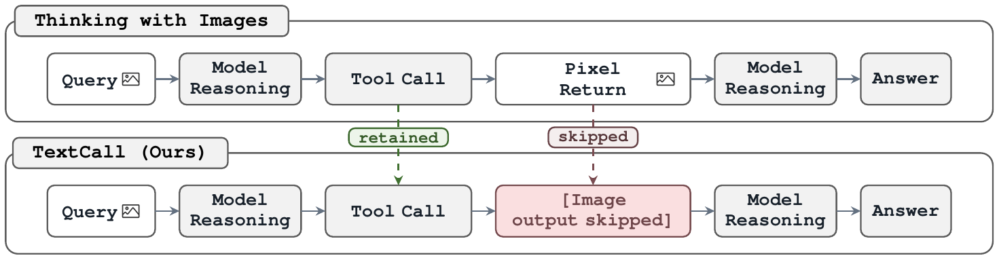
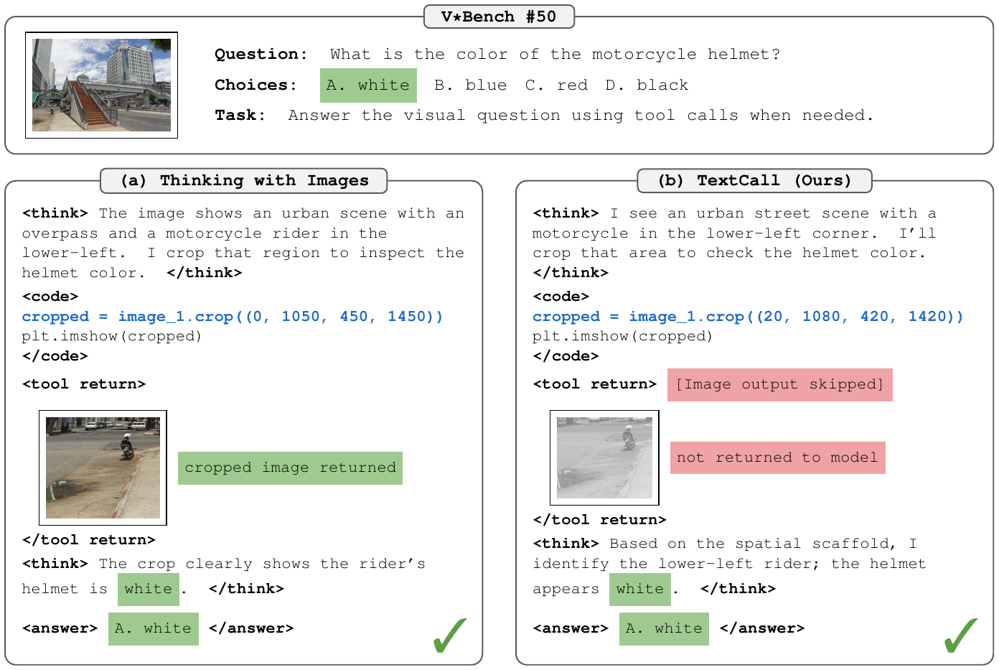
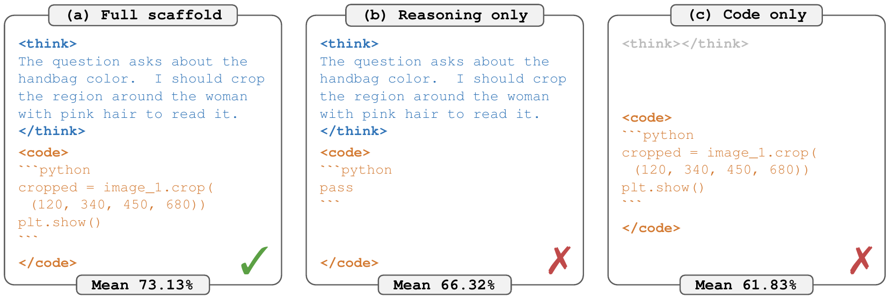
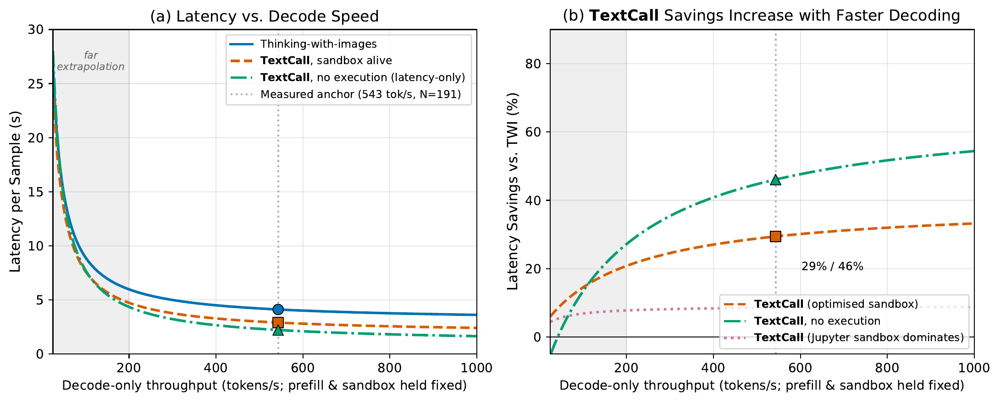

Thinking With Tools, Not With Pixels:
Tool Calls as Text Scaffolds for Visual Reasoning
Overview
Tool-augmented vision-language models are often described as systems that think with images: they call crop, zoom, or code tools and reason over the returned pixels. Yet diagnostics challenge the premise that returned images carry the reasoning signal: replacing returned images with noise changes V*Bench by only 0.52 pp, removing images can even improve MathVista, and only 57% of returned crops contain the target object.
The paper tests the Tool-Call Scaffold Hypothesis: the missing causal signal is the structured text emitted before any returned pixel arrives, including the tool name, coordinates, target description, and intent. This textual scaffold already encodes where to look and what to find.

TextCall Matches or Exceeds Thinking-with-Images
Standard thinking-with-images training couples two signals: the model emits a structured tool call, then consumes the image returned by that call. TextCall keeps the first signal intact and changes only the second. The model still produces the same crop, zoom, or code-style call, but the observation returned to the model is the fixed text marker [Image output skipped].

This matters because test-time image removal mixes two effects: a real need for returned pixels and a protocol mismatch. TextCall instead trains the model to never expect returned pixels, so the comparison isolates the carrier channel under a matched setting.
Main Results: TextCall >= Thinking-with-Images Across Scales
Returned pixels are not necessary under matched training is the paper's main empirical claim. The key comparisons are 9.5K LoRA thinking-with-images versus 9.5K TextCall, and 65K full fine-tuning thinking-with-images versus 65K TextCall. The RL row is presented as post-training behavior, not as a claim that RL is required for TextCall to match image-return training.
| Model / Protocol | Data | Eval | V* | HR-4K | HR-8K | MMStar | CV-2D | CV-3D | Mean |
|---|---|---|---|---|---|---|---|---|---|
| Thinking-with-images SFT | 9.5K LoRA | Agent | 71.73 | 63.00 | 54.00 | 56.20 | 74.48 | 66.92 | 64.39 |
| TextCall SFT | 9.5K LoRA | TextCall | 76.96 | 71.50 | 67.00 | 56.93 | 70.93 | 68.42 | 68.62 |
| Thinking-with-images SFT | 65K | Agent | 78.53 | 69.25 | 64.38 | 61.33 | 73.37 | 72.17 | 69.84 |
| TextCall SFT | 65K | TextCall | 78.01 | 73.12 | 67.50 | 62.73 | 72.32 | 73.67 | 71.23 |
| TextCall SFT+RL | 77K | TextCall | 81.68 | 73.88 | 70.62 | 65.53 | 67.32 | 56.83 | 69.31 |
At the 65K scale, TextCall is 0.52 pp lower on V*Bench alone but the core six-benchmark mean is 71.23 versus 69.84 (+1.39 pp). Four of six benchmarks favour TextCall; the two small reversals (V*Bench −0.52 pp, CV-2D −1.05 pp) are within noise, and the suite-level comparison favours TextCall.
TextCall matches or exceeds thinking-with-images without post-call pixels under SFT, and maintains active tool use under RL where thinking-with-images collapses. The post-call pixel return is not a necessary carrier for tool-augmented visual reasoning gains.
Why TextCall Works: The Scaffold Carries the Gain
Data Audit: Scaffold Recovers Image Accuracy
The scaffold recovers image accuracy in the paper's static carrier audit. On 1,000 matched training queries, the judge sees different information channels while the question is held fixed.
| Condition | Judge input | Accuracy |
|---|---|---|
| Question only | Question | 51.20% |
| Image only | Question + original image | 73.50% |
| Scaffold only | Question + first reasoning block + crop/zoom code | 73.10% |
| Image + scaffold | Question + image + scaffold | 79.40% |
Scaffold-only minus image-only is −0.40 pp with 95% CI [−3.20, +2.40], passing the paper's 5 pp non-inferiority test. The gain decomposition is also balanced: of the 28.2 pp gain from question-only to image-plus-scaffold, 57% is recovered by both image and scaffold, 22% is image-unique, and 21% is scaffold-unique.
Scaffold Decomposition: Reasoning Guides and Code Grounds
The component ablation asks what inside the scaffold matters. Reasoning guides and code grounds: reasoning text supplies intent and target description, while code supplies concrete spatial coordinates.

| Variant | Assistant content | V*Bench | HR-4K | CV-2D | Mean |
|---|---|---|---|---|---|
| Full scaffold | Reasoning + executable code | 76.96% | 71.50% | 70.93% | 73.13 |
| Reasoning only | Reasoning + pass |
67.02% | 72.12% | 59.81% | 66.32 |
| Code only | Empty reasoning + executable code | 64.92% | 65.50% | 55.08% | 61.83 |
Reasoning alone is enough on HR-4K but loses spatial grounding on V*Bench and CV-2D. Code-only keeps coordinates but loses the rationale, so the model can act as if it saw a region that was never returned.
The scaffold that survives TextCall is a composition of reasoning text and spatial code. Reasoning supplies the task intent and visual rationale; code anchors that rationale to concrete spatial coordinates. Removing either component weakens average performance, with code grounding mattering most on V*Bench and CV-2D.
TextCall Is the Lower-Cost Default When Pixels Are Not Load-Bearing
If the scaffold is the load-bearing carrier in this regime, TextCall is the cheaper default. It keeps Agent Mode and the multi-turn tool interface, but removes returned image-token injection and returned-image API calls from the reported deployment path.
| Method | V*Bench | 6-bench mean | Turns | API calls | Mean latency | p50 latency |
|---|---|---|---|---|---|---|
| TextCall sandbox | 78.01% | 71.23 | 2.3 | 0 | 2.91s | 2.49s |
| Thinking-with-images | 78.53% | 69.84 | 2.8 | 1.8 | 4.12s | 3.10s |
| TextCall no execution | - | - | 2.4 | 0 | 2.22s | 1.73s |
The reported latency reduction is 29–46%. Each returned image adds about 498 ms of vision-token prefill in later turns, while sandbox execution accounts for about 15% of total latency.

Deployment default
The boundary conditions are explicit: one base model, one cold-start corpus, one seed, one GRPO epoch, and one perception-heavy evaluation suite. Returned pixels may become load-bearing when the task has a representational bottleneck or a visual prior gap, such as novel objects or fine-grained visual differences that the scaffold cannot verbalize or replace.
Conclusion
TextCall tests the unit-of-thought question with a training-time carrier swap: preserve the tool-call scaffold, remove returned pixels, and evaluate the model under the protocol it was trained to follow. Across the studied thinking-with-images regime, the results support the Tool-Call Scaffold Hypothesis: much of the gain attributed to visual tool use is carried by structured text emitted before image observation.
The conclusion is deliberately scoped. The missing regime is where returned pixels supply information the scaffold cannot verbalize or replace; future thinking-with-images systems should report a scaffold-only control so the load-bearing carrier is measured rather than assumed.
BibTeX
@misc{textcall2026thinking,
title = {Thinking With Tools, Not With Pixels: Tool Calls as Text Scaffolds for Visual Reasoning},
author = {Shao, Jiahao and Yang, Yuanbo and Liao, Yiyi and Shen, Yujun and Yang, Ceyuan and Xu, Yinghao},
year = {2026}
}